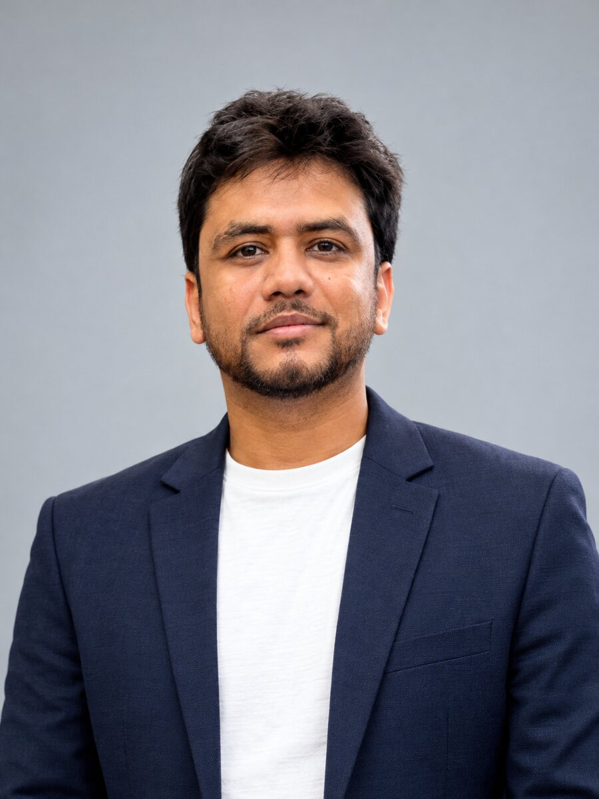
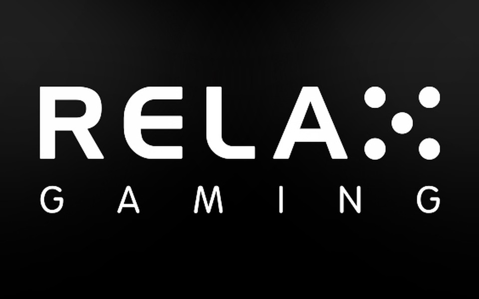
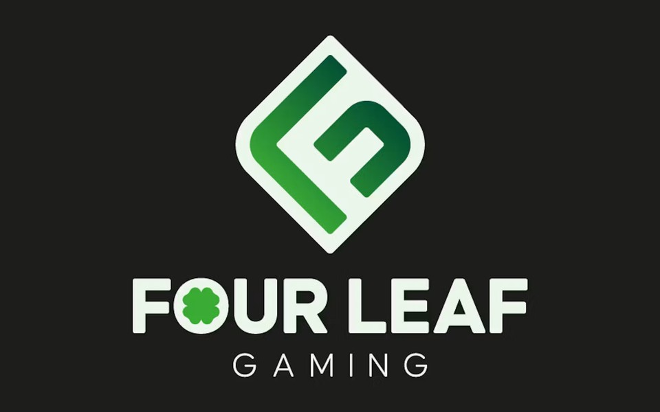
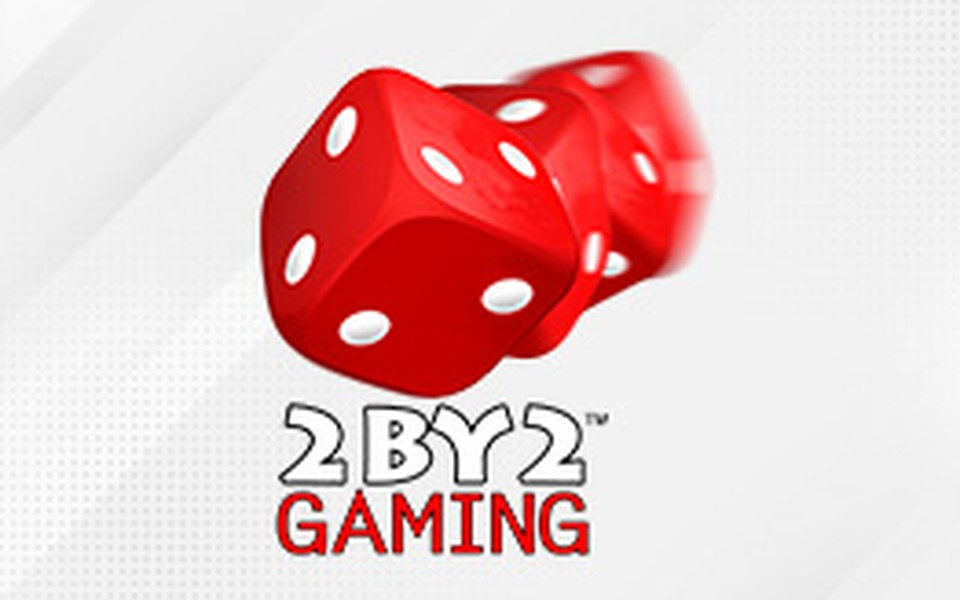
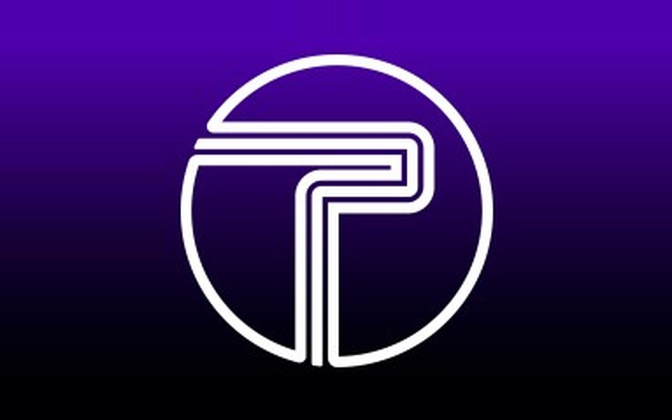
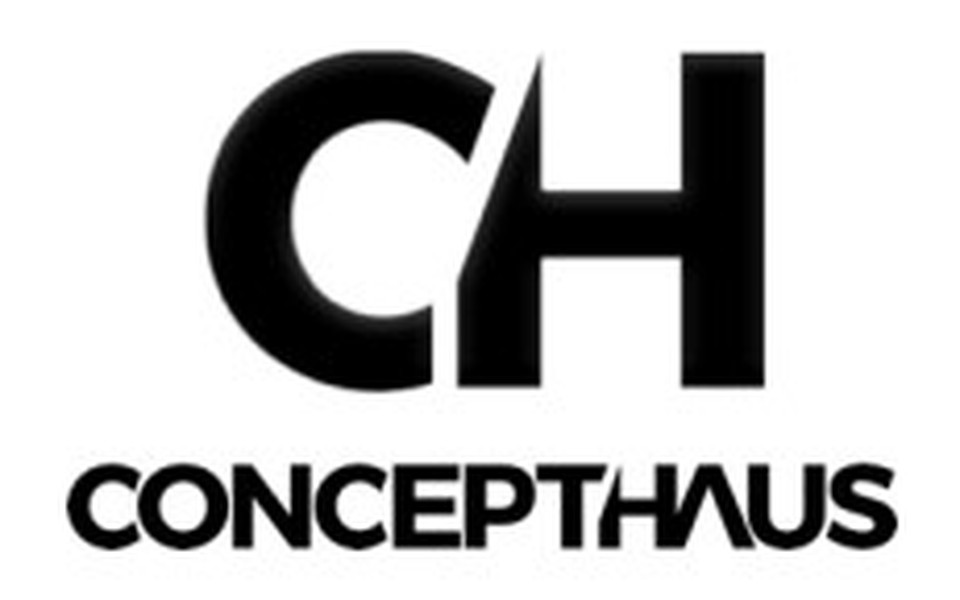
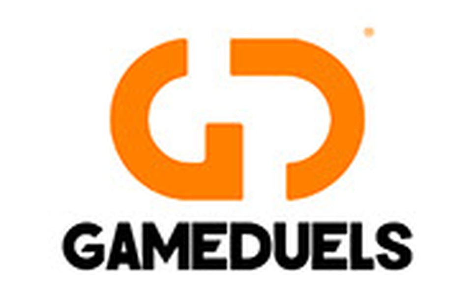

Creating Fun and Engaging games, from Idea to Release.
Introduction

I'm Sandipan Chakraborty, a game and system designer based in Bangalore. I'm a creative, product-oriented designer with over five years of experience building gameplay systems, feature mechanics, player progression and the user experience around them, across more than one genre.
For the last few years I have designed slot games end to end at ZVKY Design Studio: theme and feature ideation, feature mechanics and reward loops, documentation, QA and delivery, working with balancing specialists on pacing. Over 25 commercially released games came out of that work, for land-based and online markets.
I have also built original concepts to work on what slots don't let me do: action loops, one-gesture mobile design and multiplayer board games. I write documents other people can build from, and I prototype when a document can't answer the question.
What I bring to a team is player psychology, data-informed decisions and close work with art, development, QA and product. I enjoy mentoring other designers and keeping a design's quality consistent from first concept to release.
Profile summary
What I'm good at
Systems
- Gameplay systems and mechanics
- Core loop and player progression
- Game economy and reward fundamentals
Craft
- Feature ideation and rapid prototyping
- Level design and UX flow
- GDDs and feature specs
Product
- Market research and competitive analysis
- Product ownership and agile development
- Cross-functional collaboration
Team
- Team leadership and design mentorship
- End-to-end game production
- AI-assisted design workflows
Where I've worked
Game Designer / Product Owner
- Led end-to-end design and production of 25+ commercially released slot games for international clients.
- Designed core gameplay systems, feature mechanics, reward structures, UI flows and progression.
- Ran market research, competitor analysis and player-behaviour studies to shape engaging gameplay.
- Authored Game Design Documents, feature specifications and production documentation.
- Worked closely with the cross-functional team across the development life cycle.
- Led a small in-house design team: concept reviews, mentoring and design quality.
- Used AI tools to speed up ideation, documentation and early design exploration.
Game Designer
- Designed gameplay systems, levels, environments and progression for mobile games across genres.
- Built player journeys with environmental storytelling, cinematic sequences and level design.
- Produced game-ready assets, integrated them into engines and worked with developers on performance.
- Contributed to UI flow improvements and gameplay iteration from design reviews.
Lab Assistant
- Assisted in game design, level design, 3D modelling, animation and sound design labs.
- Prepared technical documentation, assessments and practical sessions.
- Built a strong grounding in structured game production workflows and mentoring.
Clientele






The kinds of games I've designed
Slot games
Commercially released land-based and online games for global publishers. Gameplay mechanics, feature systems, reward loops and production-ready documentation, with balancing specialists tuning pacing and engagement.
Casual and hypercasual
Gameplay mechanics, GDDs, UI flows and level progression for multiple casual and hypercasual games, with a focus on intuitive onboarding, session design and long-term engagement.
RPG fighting
Combat encounters, character progression, environments, levels and cinematic sequences. I was the primary designer, planning player progression and gameplay flow.
What I work with
Design
- Slot feature and bonus design
- Systems and economy
- GDDs and flowcharts
- Prototyping
UI / UX
- Wireframes
- UX flows
- Cabinet and mobile layouts
- Figma
Engines & art
- GDevelop · Unity · Unreal
- Maya · ZBrush
- Substance Painter
- Photoshop · After Effects
- Audacity
Production
- JIRA
- Word · Excel · PowerPoint
- AI tools (ChatGPT, Claude, Gemini)